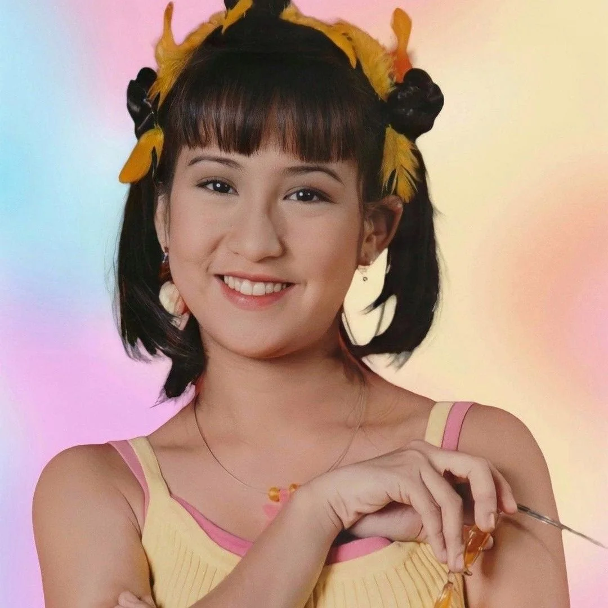
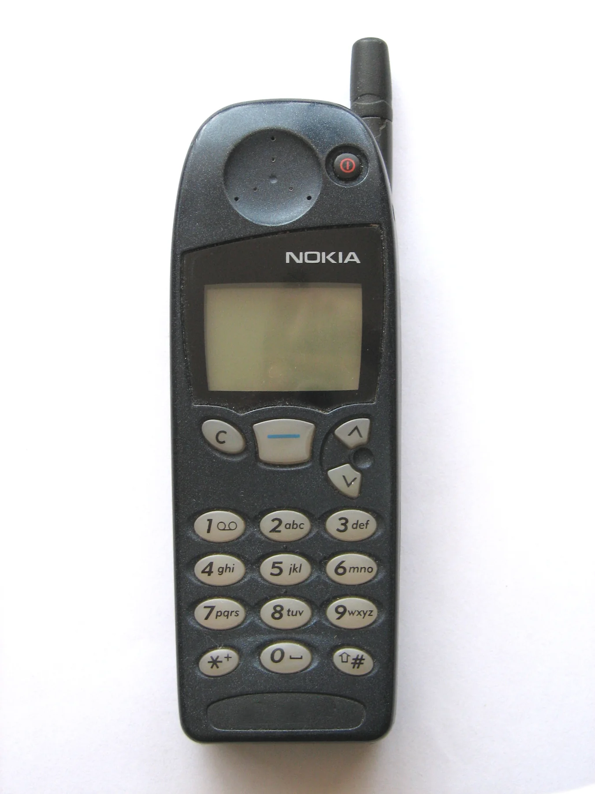
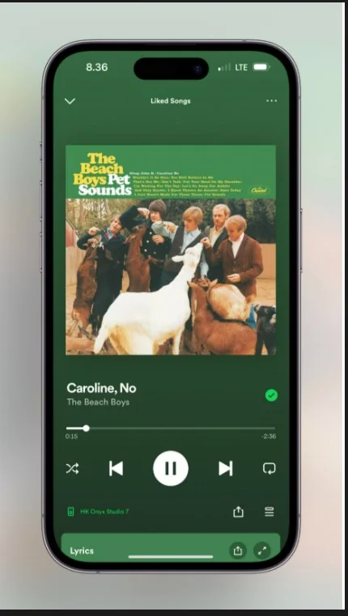
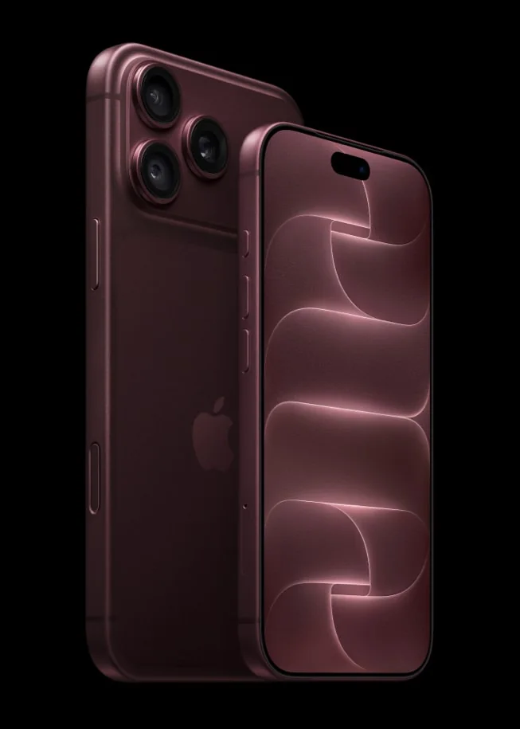
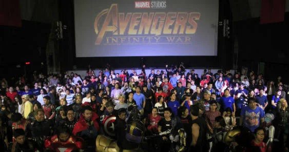

ROOM 01 / IDENTITY
Body &
Self-Image
Celebrity images, hairstyles, fashion, and the way young people express who they are.
05 ARTIFACT PAIRINGS
Log in. Look back. See what shaped us.
Rewind.PH is an interactive digital museum tracing how Filipino popular culture travels through generations. Step from the 2000s into the present and discover what changed, what stayed, and what continues to shape the way we live.



Explore each dimension of popular culture as a living conversation between the past and the present.
Celebrity images, hairstyles, fashion, and the way young people express who they are.

Communication, computers, gaming, and entertainment tools that changed everyday life.

Music, food, films, stories, and businesses moving across borders and into local life.
Every artifact pairing opens into an expanded gallery with additional images, individual captions, context, and a short interpretation of the cultural shift.
The museum connects earlier influences, the 2000s cultural landscape, and the media habits shaping the present.
Late-1990s devices, celebrity images, and entertainment formats become important precursors to the next decade.
Television, music videos, mobile phones, home computers, and global brands shape everyday popular culture.
Social platforms, streaming, smartphones, and on-demand entertainment accelerate cultural exchange.
Short-form video, online personalities, hybrid gaming, and global fandoms reshape influence and participation.
AI-assisted media, connected devices, and personalized platforms continue to redefine what popular culture can be.
Curator's note: selected late-1990s artifacts are shown as roots whose influence carried into the 2000s.
The museum is also a project-management output: goals, work sequence, resources, quality checks, and measurable success indicators are made visible.
Within 15 working days from project approval, the team will design, build, test, and publish a responsive virtual museum containing 3 curated exhibition rooms, at least 15 past-to-present artifact comparisons, and captions and alternative text for 100% of displayed photographs. The museum will be tested with at least 20 users, targeting at least 90% successful task completion and an average visitor satisfaction rating of 4.0 out of 5 or higher.
Validate artifact names, timelines, descriptions, image permissions, and the then-versus-now relationship.
Sort the uploaded files, optimize images, write captions and alt text, and prepare a media manifest.
Map visitor journeys, create the visual system, design room layouts, and prototype the interface.
Develop the responsive site, 3D gallery, artifact viewer, search, navigation, and project blueprint.
Run device, accessibility, content, and user tests; fix issues; publish and document the project.
Project lead; content researchers / curators; UI designer; web developer; media editor; QA testers; teacher-adviser; and at least 20 visitor-test participants.
Laptop or desktop, smartphone, internet access, code editor, HTML/CSS/JavaScript, Three.js, browser developer tools, Git, and GitHub Pages.
Uploaded artifact ZIP files, image captions, verified historical notes, project brief, source acknowledgements, design references, testing checklist, and user feedback form.
Rewind.PH is a student-built cultural time capsule that connects Filipino popular culture across generations through research, visual storytelling, and an immersive digital exhibition.
Our team brings together software development, graphic design, and artifact research to create an accessible virtual museum. Each member contributes to documenting the past, interpreting the present, and presenting the connections in a clear and engaging visitor experience.
Leads the team and oversees the website architecture, implementation, and interactive museum experience.
Leader · Software DeveloperResearches, checks, and organizes the historical and contemporary artifacts.
Artifacts ResearcherResearches artifact context and supports the then-and-now comparisons.
Artifacts ResearcherResearches cultural references and helps prepare clear exhibit information.
Artifacts ResearcherShapes the visual identity, exhibit graphics, and overall presentation style.
Graphic DesignerResearches and verifies artifact details, dates, and cultural connections.
Artifacts ResearcherResearches exhibit materials and supports the collection's captions and context.
Artifacts ResearcherPopular culture is more than trends. It reflects identity, technology, access, creativity, and the ways Filipino communities connect with the world.
Your browser could not start the optional 3D gallery. The complete museum archive is still available with all 15 artifact comparisons and their captioned images.